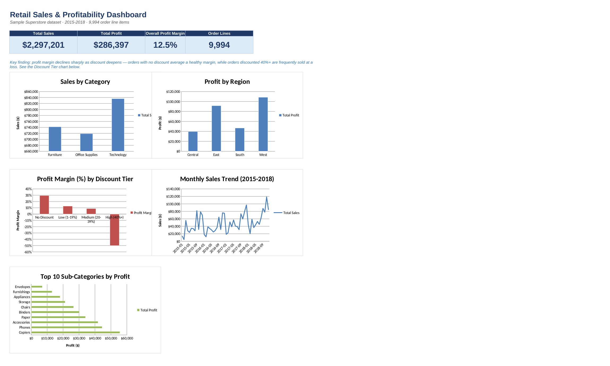

Retail Sales & Profitability Dashboard
Excel TablesSUMIFS / COUNTIFS
INDEX/MATCHNested IF
Conditional FormattingDashboard Design
In plain terms
Every retail manager asks a version of the same question: which regions, categories, and discount levels actually make money, and where is revenue being generated at the expense of profit? This dashboard answers that using the widely used "Sample Superstore" dataset (a US retailer, 9,994 order line items, from 2015 to 2018), and it is built so a manager can open it, filter it, and explore the answer themselves.
$2.30M
Total sales
$286K
Total profit
12.5%
Overall profit margin
40,169
live formulas, zero errors
Key finding
Profit margin falls sharply as discount deepens. Orders with no discount average a
29.5% margin, while orders discounted 40% or more are sold at an average
loss of 50.0%. Discounting isn't uniformly bad, but past roughly 20%, it stops paying for
itself in this dataset, a clear signal for a pricing or sales team to act on.

How it's built
- Data sheet: the cleaned raw data as a native Excel Table, with three formula-driven
helper columns (Year-Month via
TEXT(), Profit Margin, and a Discount Tier built with nestedIF), plus anINDEX/MATCHlookup column against a reference table. - Summary sheet: pivot-style breakdowns by Category, Region, Segment, Discount Tier, and
Month, all built with
SUMIFS/COUNTIFSagainst the Data table, so every number recalculates automatically if the underlying data changes. A Top 10 sub-category ranking usesLARGE+INDEX/MATCHrather than a hardcoded list. - Dashboard sheet: KPI cards and five charts built directly from the Summary formulas.
Every formula was verified with a recalculation pass: 40,169 formulas, 0 errors.
Repository / download
Full workbook: projects/excel-retail-analysis/Aseye_Gbagbo_Excel_Retail_Sales_Dashboard.xlsx in
this repository (github.com/leesey15).